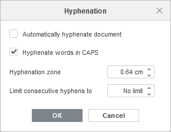

Dodavanje prelomljenja reči
Prelomljenje reči se koristi da se reči na kraju linija razdvoje pomoću znaka '-' na jezički ispravan način.
Da biste dodali prelomljenje reči u Document Editor:
- Prebacite se na karticu Raspored u gornjoj alatnoj traci.
- Kliknite na ikonu Prelomljenje reči i izaberite stavku Automatski da se prelomljenje primeni na dokument.
-
Za pristup podešavanjima prelomljenja, kliknite strelicu ispod ikone Prelomljenje reči i izaberite stavku Opcije prelomljenja:

- Automatski prelomljavanje dokumenta – čekirajte ovu opciju da se dokument prelomljava.
- Prelomiti reči napisane VELIKIM SLOVIMA – isključite ovu opciju da se reči napisane velikim slovima ignorišu prilikom prelomljenja.
- Zona prelomljenja – unesite vrednost da kontrolišete udaljenost od ivice stranice na kojoj se zahteva crtica.
- Ograniči uzastopne crtice na – unesite vrednost da kontrolišete broj uzastopnih crtica, ili ostavite podrazumevanu opciju Bez ograničenja.
- Kliknite dugme OK.
Da biste uklonili prelomljenje reči, kliknite strelicu ispod ikone Prelomljenje reči i izaberite opciju Nema.